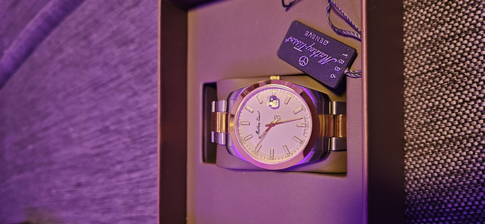
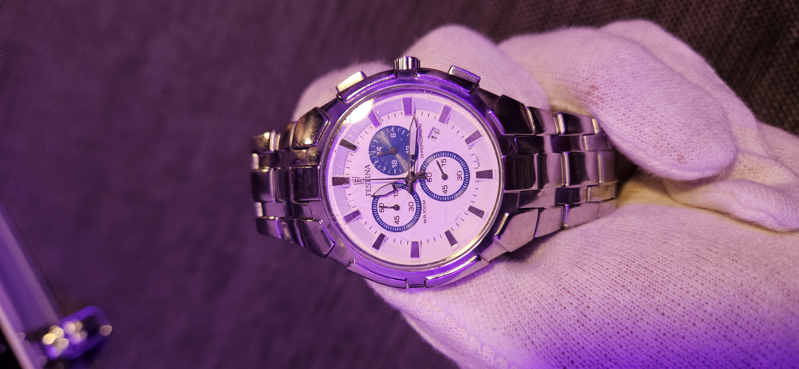

Mathey‑Tissot H450 on tyylikäs ja ajaton sveitsiläinen rannekello, joka yhdistää klassisen muotoilun ja käytännölliset toiminnot. Sen pyöreä kuori, selkeä analoginen taulu ja hillityt yksityiskohdat tekevät kellosta monikäyttöisen valinnan niin arkeen kuin juhlaankin. Kello on saatavilla useilla värivaihtoehdoilla, kuten mustalla tai valkoisella kellotaululla, ja metallirannekkeella, joka voi olla yksivärinen tai kaksivärinen ruostumatonta terästä. Indeksit ja viisarit on varustettu lumella, mikä helpottaa ajan lukemista myös hämärässä. H450-mallin sydämenä toimii tarkka sveitsiläinen Ronda-kvartsikoneisto, joka takaa luotettavan ajanoton ja vähäisen huollon tarpeen. Kellon kuori on noin 40 mm halkaisijaltaan, ja sen safiirilasi tarjoaa erinomaisen naarmunkestävyyden ja kestävyyden arjen käytössä. Kellossa on myös käytännöllinen päivämäärän näyttö klo 3, ja sen vesitiiviys on 50 metriin (5 ATM), mikä suojaa roiskeilta ja sateelta. Mathey‑Tissot H450 yhdistää klassisen ulkonäön, kestävän safiirilasin, luotettavan Ronda-koneiston ja laadukkaat materiaalit kohtuulliseen hintaan. Tämä kello sopii täydellisesti niille, jotka arvostavat sveitsiläistä laatua, ajattomia muotoja ja käytännöllisyyttä arjessa.

Festina 6812 on tyylikäs ja sporttinen kronografi‑rannekello, joka yhdistää klassisen muotoilun ja käytännölliset ominaisuudet arjen käyttöön. Tässä kellossa on selkeä ja dynaaminen analoginen näyttö, jonka kronografitoiminnot (stop‑toiminnot) tarjoavat mahdollisuuden tarkkaan ajanottoon. Kellon ajaton ulkonäkö sopii yhtä hyvin päivittäiseen käyttöön kuin aktiiviseen elämäntyyliinkin. festina.cz Festina 6812 kuuluu Timeless Chronograph ‑mallistoon ja se on varustettu tarkalla kvartsikoneistolla, joka takaa luotettavan ajanoton ja vähäisen huollon tarpeen. Kello on valmistettu laadukkaasta ruostumattomasta teräksestä, ja sen vesitiiviysluokitus on 10 ATM (100 m), joten se kestää hyvin roiskeita, suihkua ja uintia pinnalla ilman sukellusta. festina.cz Kellon kuoren halkaisija on noin 42 mm, mikä antaa sille modernin ja miehekkään ilmeen, mutta silti se pysyy tyylikkäänä niin arjessa kuin vapaa‑ajallakin. Festina 6812 sisältää myös päivämääränäytön, joka lisää käyttömukavuutta jokapäiväisessä ajankäytössä. festina.cz Festina on tunnettu brändi, jonka juuret ulottuvat vuoteen 1902, ja se yhdistää perinteitä sekä nykyaikaista muotoilua rannekelloihinsa. Festina 6812 on erinomainen valinta sinulle, joka arvostat sporttista, mutta samalla elegantein vivahtein varustettua rannekelloa.

Olen tilannut kellonkorjausvälineet, jolla olen tehnyt pieniä korjauksia kelloihin lasinvaihtoa ja dialeitten vaihtoja. Kitti sisältää monta eri tarvittavaa työkalua

Tällä koneella saa poistettua helposti kelloista naarmut, mutta käyttö vaatii harjoittelua ennen tekemistä!

Loistava hiomatahna. Tämä poistaa helposti naarmut lasista. HUOM! Mineraalilasille omatahna kuvassa esiintyvä akryylilasille.